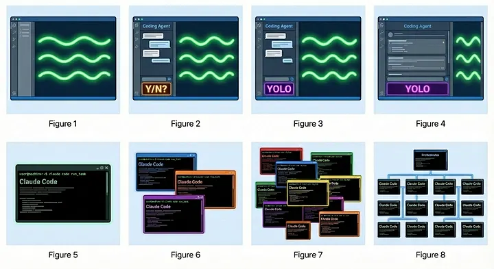

Where would you place yourself on this scale?

Image credit: Steve Yegge - "Welcome to Gas Town"
| Stage | Name | Description |
|---|---|---|
| 1 | Zero/Near-Zero | Code completions only, sometimes ask Chat questions |
| 2 | IDE Agent, Permissions On | Sidebar agent asks permission for each action (Y/N prompts) |
| 3 | IDE Agent, YOLO Mode | Trust goes up, permissions off, agent runs autonomously |
| 4 | Wide IDE Agent | Agent fills the screen, code is just for reviewing diffs |
| 5 | CLI, Single Agent, YOLO | Terminal-based (Claude Code), diffs scroll by, may or may not look at them |
| 6 | CLI, Multi-Agent | 3-5 parallel instances running, very fast workflow |
| 7 | 10+ Agents, Hand-Managed | Pushing the limits of manual coordination |
| 8 | Building Own Orchestrator | On the frontier, automating the workflow itself |